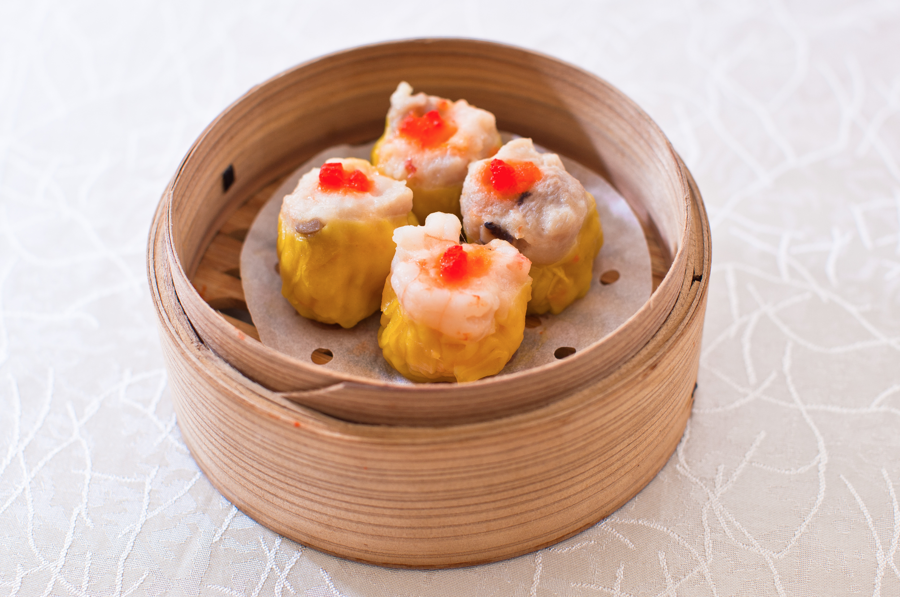

Home
SiuMai Recipe

Description
Chinese dumpling called siumai made of pork and prawn
Ingredients
- Pork
- shrimp
- pork fat
- chinese mushroom
- potato starch
- seasonings
Steps
- Beat the shrimp and pork until sticky in a mixing machine
- Mix in the seasonings until evenly mixed
- Add in the pork fat and evenly mix
- Add in mushroom and evenly mix
- Take out of the mixing machine when is all mixed evenly